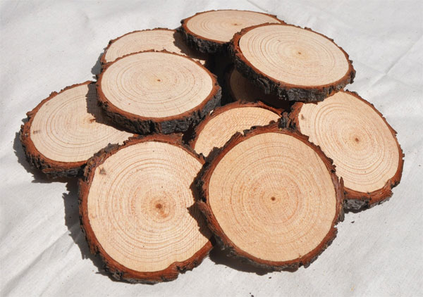

Привет мой читатель!
Здесь я расскажу о своем опыте
изготовления Стола из Эпоксидной смолы
Обработка проходит в два этапа. Этап первый.
Для обработки спила нам понадобится:
- Сам спил дерева
- Наждачная бумага
- Фрезер
Ссылка на другие спилы

Фотография спилов дерева
Этап второй.
Этап более Сложный
Для нанесения эпоксидной смолы нам понадобится:
- Эпоксидная смола
- Наждачная бумага
- Полироль
- Лак
Ссылка на другие столы

Фотография готового столика